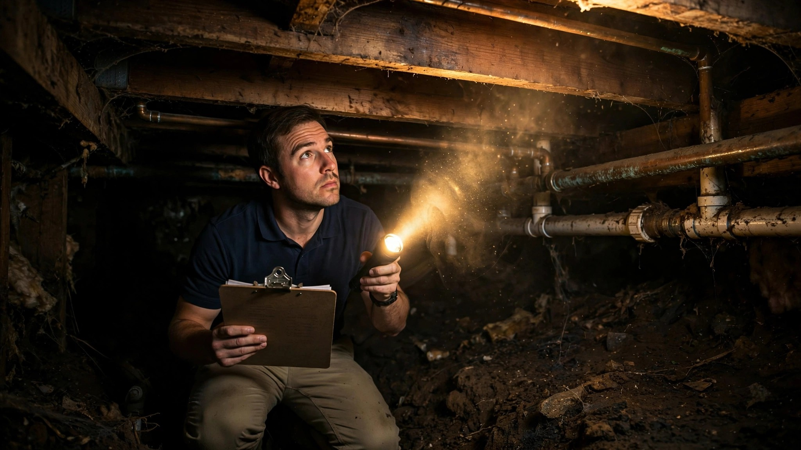

Your Home Inspector Used AI. It Wrote the Report in Half the Time. It Never Opened the Crawl Space.

Efra Rivera used to finish inspection reports at his kitchen table. He would get home from a four-hour crawl through somebody's attic and plumbing and electrical panel, sit down with his laptop, and spend another two hours matching his notes and photos to the standardized comments his clients expected. Now he speaks his observations into his phone, snaps photos, and watches the AI match them to his pre-approved report templates in seconds.
"Instead of stopping to search for comments, I can queue up multiple defects using audio, and the AI matches them to the right narratives," Rivera told Spectora in a June 2026 case study. He finishes reports on-site now, not at home. Inspectors in the early access program are cutting about 25 percent of their time per inspection.
That sounds transformative until you ask what the AI is actually doing. It is transcribing. It is matching voice clips to existing boilerplate. It is formatting. Not once, in any of its marketing or technical documentation, does Spectora claim its AI finds defects the inspector did not already see.
Every New Tool Solves the Same Problem
Spectora is not alone. Palmtech released version 11 in early 2026 with an "AI Image Defect Detector" that scans uploaded inspection photos for visible cracks and moisture damage, then drafts editable comments. Paraspot, reviewed by Inman in November 2025, uses computer vision to auto-transcribe audio narration and categorize images by room. Binsr Inspect, reviewed a month later, creates descriptive report comments from short voice prompts. Its CEO said the goal was reducing "tap Olympics," the repetitive screen-tapping that eats an inspector's afternoon.
All four tools do the same thing. They take what the inspector already observed and turn it into a formatted document faster. Palmtech's defect detector sounds like it finds problems on its own, but read the fine print: it flags issues in photos the inspector already took of things the inspector already noticed. If the inspector did not photograph the stain behind the water heater, the AI does not know the stain exists.
This is not a small distinction. A buyer who hears "AI-powered inspection" reasonably assumes the technology is scanning their house. It is scanning their inspector's paperwork.
What Inspectors Actually Miss
A Repair Pricer analysis of 50,000 home inspection reports found defects in virtually every home examined. Fifty-five percent had doors requiring adjustment, often an early indicator of foundation movement. Fifty-four percent were missing exterior caulking and sealant, the kind of gap that lets water penetrate slowly enough that the damage stays invisible for years. Forty-eight percent lacked GFCI protection on electrical circuits near water. Across the full dataset, the average home needed more than $11,000 in repairs. Porch, a home services marketplace, found that 86 percent of buyers discover at least one issue during their inspection that requires fixing.
Those are the problems inspectors do find. Nobody publishes reliable data on what they miss, because missed defects surface only when something breaks. What we know is that home inspectors operate under brutal constraints. They spend two to four hours on-site walking a property that took months to build, examining systems they cannot open, checking roofs they may not climb, and evaluating structural elements hidden behind drywall, insulation, and carpet. They are not allowed to be destructive. They cannot pull up flooring to check subfloor moisture. They cannot cut into walls to trace a suspected leak. An inspection is an observation of visible conditions under the circumstances present at the time of inspection, and most of the expensive problems in residential construction are not visible.
Computer Vision Can Detect Defects. Nobody Has Deployed It.
Researchers at the University of Salford, in partnership with Claim.co.uk, trained a computer vision model on over 27,000 labeled images of residential disrepair. Their IntelOptic platform analyzes a photo in 1.5 seconds and identifies damp, mold, and structural damage with up to 95 percent accuracy. The project was motivated by the death of two-year-old Awaab Ishak in Rochdale, England, from severe mold exposure in a social housing unit in December 2020. It works in the UK social housing context it was designed for. It has not been deployed in a single American home inspection.
A Shenzhen research team combined drone imaging with deep learning to detect facade cracks at 87.86 percent mIoU accuracy and leakage at 79.05 percent. A GitHub project called DefectSpotter uses Google's Gemini 2.0 Flash API for real-time property defect detection through a phone camera. Another team built a YOLOv8 pipeline that processes recorded inspection video frame by frame, flagging cracks, water damage, and mold with bounding boxes and confidence scores.
All of these systems work in controlled conditions. Consistent lighting. Known camera angles. Clean surfaces. Labeled training data from curated datasets, not from the inside of a 1974 ranch house's crawl space where the vapor barrier has collapsed into the mud and the only light source is a headlamp. The hard problems in residential inspection are not pattern recognition on well-lit surfaces. They are judgment calls in bad conditions about things you cannot fully see.
The Liability Question Nobody Is Asking
When an inspector dictates "minor cracking observed at northwest foundation wall, appears cosmetic, recommend monitoring," and the AI translates that into report language, who wrote the opinion? If the crack was structural and the buyer relied on the report, the inspector's errors-and-omissions insurance covers the claim. But as AI-generated report language becomes standard, the line between the inspector's professional judgment and the software's suggested phrasing will blur. An inspector who accepts an AI-drafted comment without editing it is still the author of record. An inspector who overrides a comment the AI suggested differently has created a paper trail of disagreement between human and machine that a plaintiff's attorney will find interesting.
The American Society of Home Inspectors (ASHI) Standards of Practice have not been updated to address AI-assisted reporting. InterNACHI, the larger of the two major inspector associations, has published no guidance on AI tool use. State licensing boards, which regulate inspectors in 38 states, have not weighed in. The tools are shipping faster than the rules can follow.
What Would Actually Help
Imagine an inspector's phone scanning continuously during a walkthrough, comparing what it sees against a reference model of common defect patterns for the home's age, construction type, and climate zone. Not replacing the inspector's judgment, but flagging things that deserve a second look. A thermal overlay that highlights temperature differentials behind drywall without needing a separate FLIR camera. A moisture probability map built from the home's age, roof type, drainage grading, and local rainfall data that tells the inspector where to probe first.
None of that requires exotic hardware. The phone cameras inspectors already carry shoot at resolutions that exceed what most computer vision research papers use. The construction data, climate records, and defect pattern libraries exist in scattered public and proprietary datasets. The gap is integration. Nobody has built the bridge between what computer vision can do in a lab and what an inspector needs in a crawl space at 2 p.m. on a Tuesday.
For now, the AI in your home inspection is a transcription service with good formatting. Your inspector's eyes, experience, and willingness to get dirty remain the only detection system that matters. If you are buying a house, the question to ask is not whether your inspector uses AI. It is whether they crawled under the house.
← Back to AI Home Building